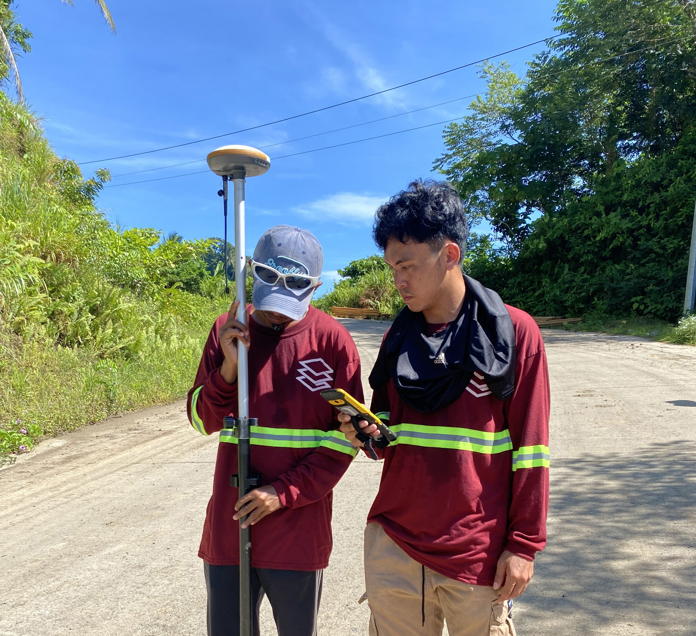
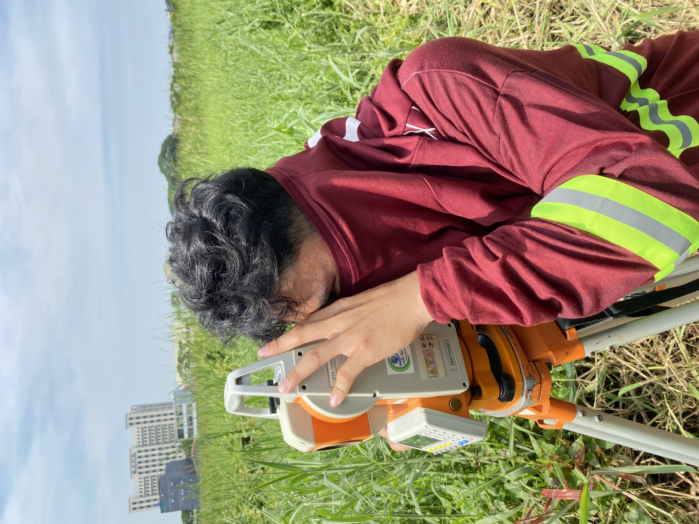
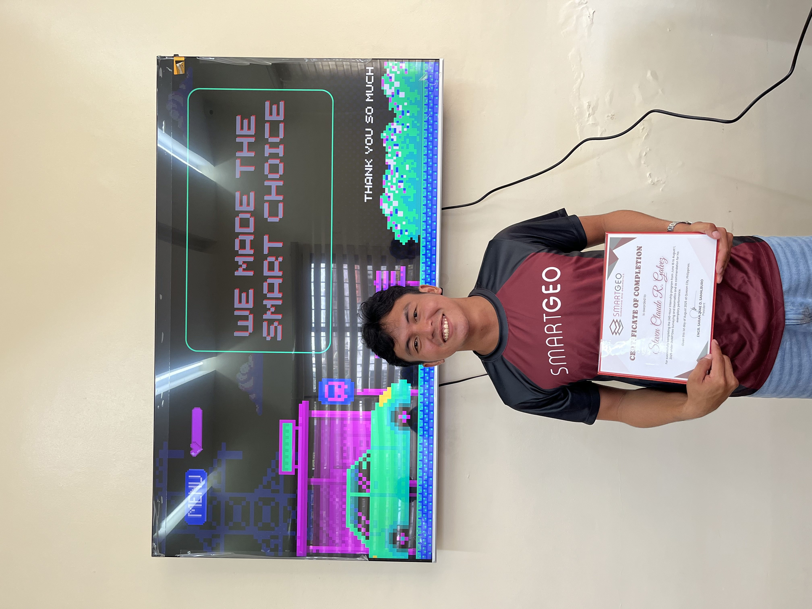

Geodetic Engineer Licensure Examination
Passed
14.8°N 120.9°E · Bulacan, Philippines
Geodetic Engineer with field experience in relocation, topographic and as-built surveys, plus GIS and remote sensing analysis.

I'm a Geodetic Engineer from Bulacan, Philippines, with a Bachelor of Science in Geodetic Engineering from Bulacan Agricultural State College.
My work connects the field and the desktop: land surveying with Total Station and GNSS RTK, and spatial analysis with GIS and remote sensing. I'm drawn to land surveying, geomatics, GIS and remote sensing because they turn measurements on the ground into maps people can use.
SMARTGEO Surveying and Geomatics · July to August 2025 for 240 hrs



Passed
Bulacan Agricultural State College
Education, field experience and technical skills in one document.
I'm open to opportunities with engineering firms, surveying companies and employers working in geomatics and GIS.
stevenclaude.basc@gmail.com